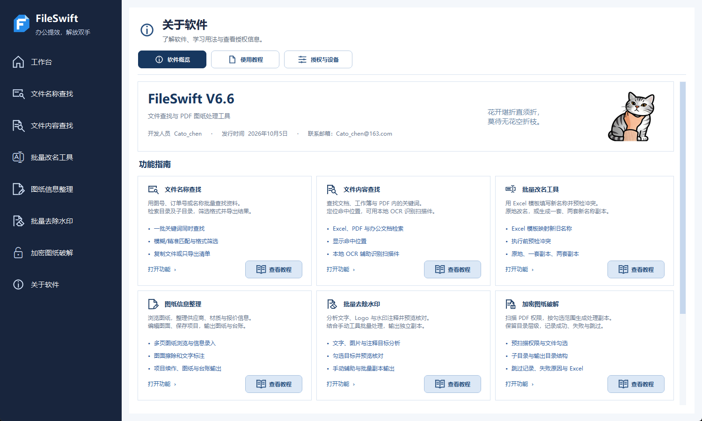

01
文件名称查找
按图号、料号与关键词批量查找，支持模糊匹配、格式筛选及结果导出。
批量关键词 · 文件复制 · Excel 清单为工程图纸与日常资料而生
把反复查找、逐个改名和图纸整理，
交给一个顺手的 Windows 桌面工具。
Windows 桌面应用 · 文件在本机处理

为这些日常工作，少一点重复。
01 / 核心能力
从找到文件，到整理结果。
常用步骤，一气呵成。
用名称批量查资料，或直接检索文档内容。关键词、子目录和格式筛选，让查找更有方向。
改名称、整理信息、处理水印与 PDF 权限，各有清晰的工作界面。处理前先检查，处理后有结果可核对。
可滚动浏览，点击截图放大查看
02 / 功能一览
按图号、料号与关键词批量查找，支持模糊匹配、格式筛选及结果导出。
批量关键词 · 文件复制 · Excel 清单检索文档关键词并定位命中位置，用本地 OCR 辅助识别扫描件。
内容检索 · 命中定位 · 本地 OCRExcel 映射名称并预检冲突，支持原地改名或一套、两套副本。
Excel 映射 · 冲突预检 · 副本输出浏览、标注图纸，整理供应商、材质与报价，保存项目并导出台账。
图纸浏览 · 信息录入 · 项目保存分析文字、Logo 与注释水印，预览核对后批量输出独立副本。
目标分析 · 预览核对 · 手动辅助扫描 PDF 权限并勾选处理，保留目录结构，记录处理结果。
权限扫描 · 勾选处理 · 结果记录清晰的步骤，顺手的操作。
03 / 获取软件
把 FileSwift 放进你的工作流程。

V6.6 · Windows 桌面版
找文件、改名称、整理图纸。
让日常资料处理，变得更顺手。
工程图纸、订单料号、项目目录与办公资料。按清单批量找文件、改名称、整理 PDF，都可以在一个工具中完成。
文件查找、图纸处理和本地 OCR 在电脑上完成。扫描件检索前，请确认本地 OCR 组件可用。
原地改名会修改文件名；副本输出可保留原文件。PDF 权限处理输出独立副本。执行前可在界面确认输出方式。
软件使用、授权与反馈，可发送邮件至 Cato_chen@163.com。